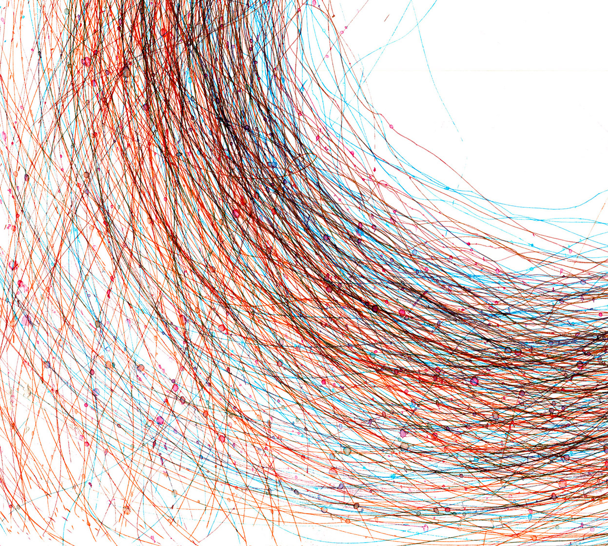
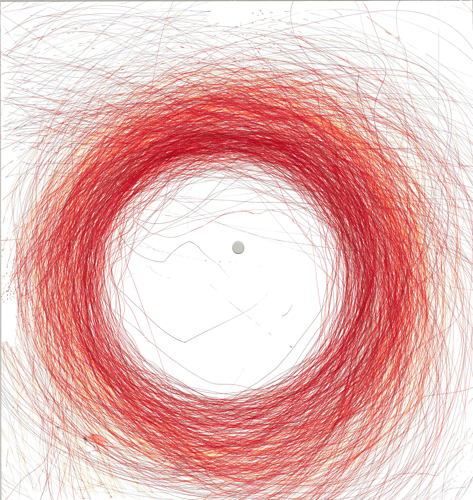
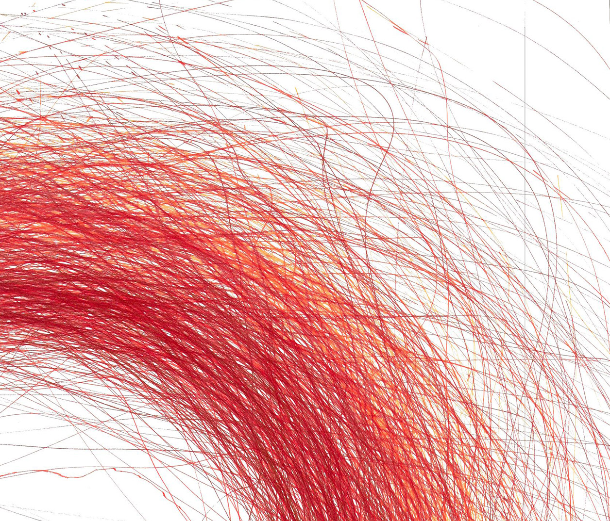
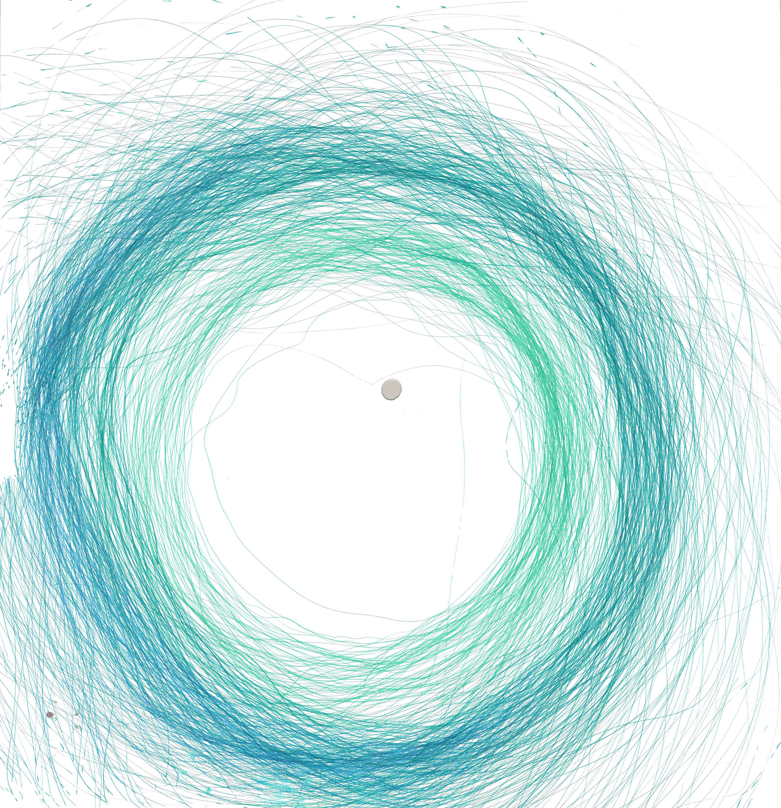
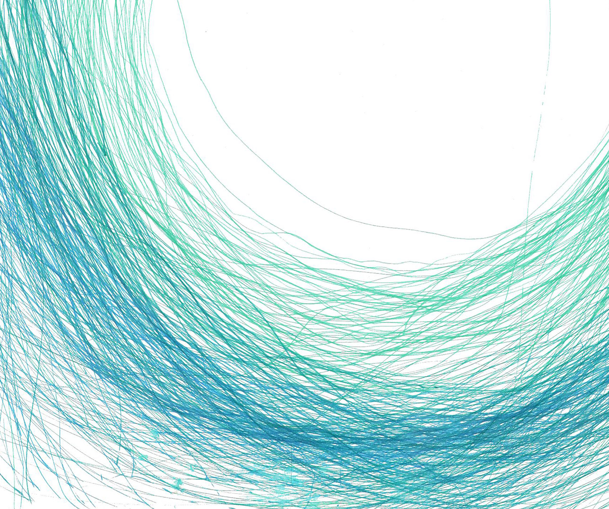
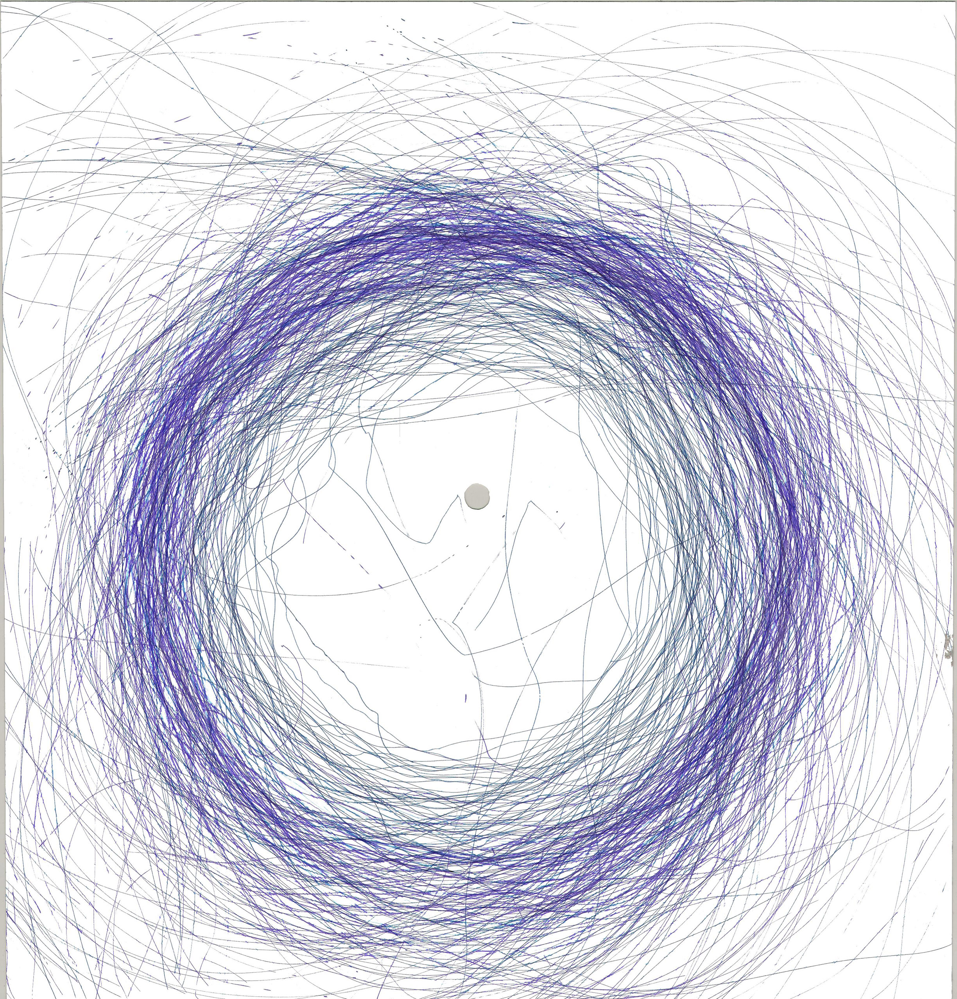
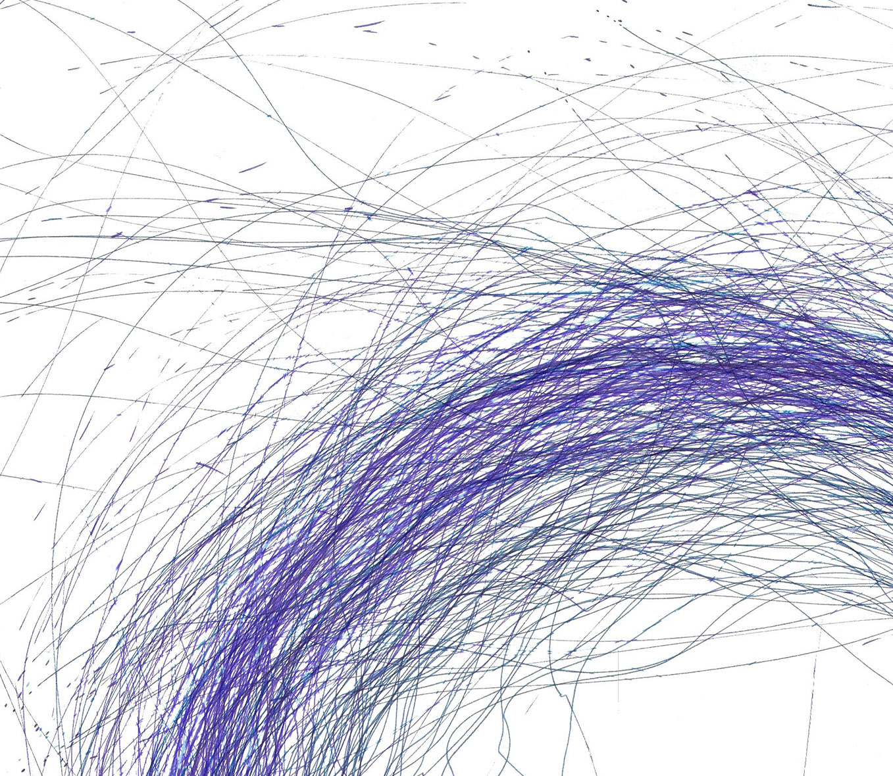
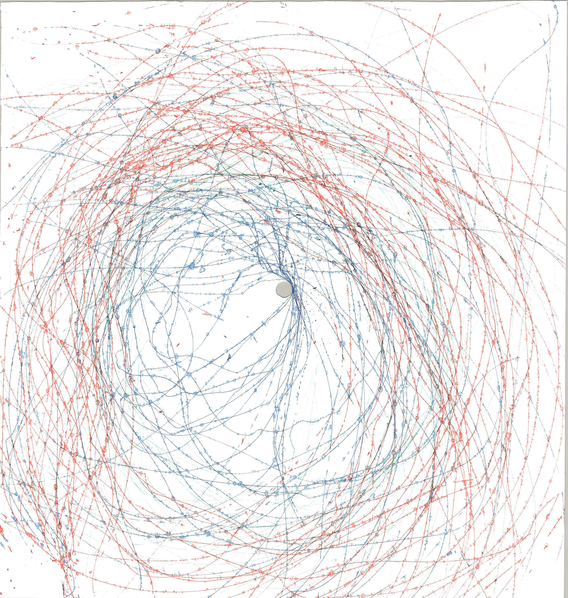
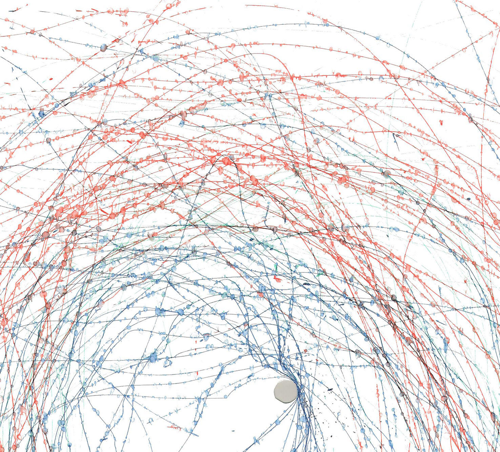
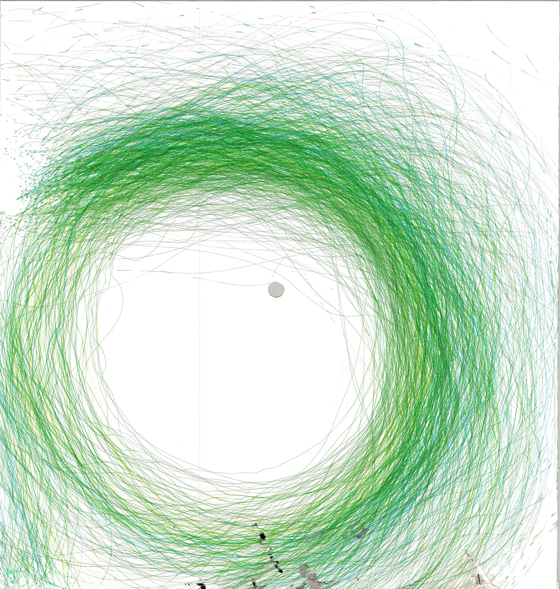
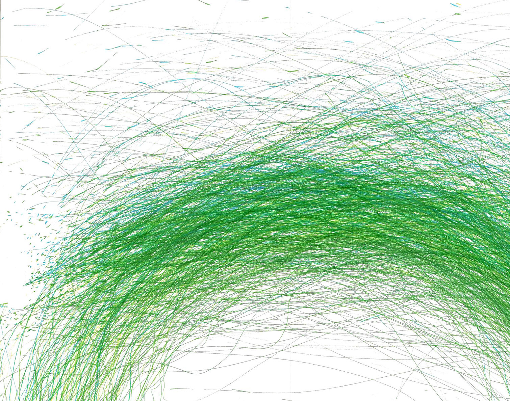
❮
❯
Wind Spirograph
2020
2020
Inspired by Tim Knowel’s Tree Drawings, I reconstructed an anemometer by 3D printing the cups and building the stand from wood. I would leave my machine outside on a windy day for around an hour at a time to be able to produce a large amount of overlapping lines, these overlapping lines ended up creating some nice gradients between the different colored pens I used. It was interesting to see the lines change in direction when presented with strong gusts, as well as getting beautiful patterns when rain was introduced to my environment.